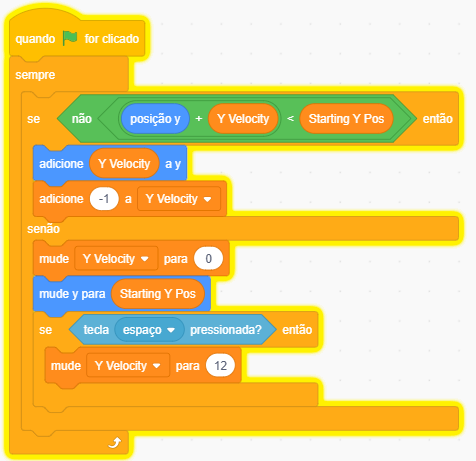

Dino Runner
Scratch

Dino Runner é um jogo de corrida infinita onde o jogador controla um dinossauro que deve evitar obstáculos e coletar itens para sobreviver o maior tempo possível. O objetivo é alcançar a maior pontuação possível, correndo sem parar e superando desafios cada vez maiores.
Você já reparou na categoria "Meus Blocos" lá no final da lista do Scratch? Ela é diferente de todas as outras porque vem completamente vazia! Isso acontece porque ela serve para você inventar os seus próprios blocos de programação, também conhecidos como Blocos Personalizados.
Imagine que você está jogando um jogo de luta. Para dar um golpe especial, você precisa apertar: Cima, Baixo, Esquerda, Direita e Pulo. É muito botão para lembrar! Criar um bloco personalizado é como inventar um botão novo no seu controle chamado "Golpe Especial". Você usa apenas esse botão, e o computador aperta todos os outros botões do combo sozinho para você.
Quando o nosso jogo começa a ficar muito grande, a tela fica cheia de blocos espalhados. Os blocos cor-de-rosa ajudam a arrumar a bagunça de duas formas principais:
Veja como o código fica muito mais elegante. O motor principal do jogo fica limpo, chamando apenas o nome do nosso botão novo.
E em outro canto da tela, nós criamos a receita, ensinando para o computador o que exatamente esse botão faz.
Em jogos de voo, o personagem parece ir para a frente, mas na verdade é o chão que anda para trás! Para o cenário não acabar nunca e não deixar um buraco branco na tela, nós usamos um truque visual com clones.
O bloco rosa é o motor do nosso cenário. Ele puxa o chão para trás mudando a posição X em -10. Quando o pedaço de chão chega no limite esquerdo da tela (posição -480) e está prestes a sumir, o código faz uma mágica matemática: ele multiplica a posição por -1. Isso teleporta o chão imediatamente para o outro lado (posição 480 positiva), criando um ciclo sem fim.
Um pedaço de chão não é longo o suficiente para cobrir a tela inteira enquanto anda. Por isso, quando o jogo começa, o chão original vai para o centro e cria um clone exato dele mesmo. Esse clone nasce lá no canto direito da tela, bem coladinho no original. Em seguida, os dois ligam o motor "Scroll" e começam a andar juntos para trás, formando uma estrada perfeita.
Se você reiniciar a partida e não apagar as cópias velhas, a tela vai ficar cheia de chãos encavalados. O primeiro bloco apaga o clone da rodada anterior para a tela começar limpa. Já o segundo bloco age como um freio de mão: se o jogador bater e o jogo enviar a mensagem de "Game Over", o chão congela imediatamente, parando a esteira rolante.
Dentro do bloco "sempre", nós colocamos a inteligência do pulo. Vamos usar -1 para o peso da gravidade e 12 para a força do pulo. Vamos quebrar essa lógica em três partes:
O bloco "se não" funciona como um radar. Ele tenta adivinhar se o personagem vai passar do chão no próximo passo, somando a posição atual com a velocidade. Se ele não for passar, o código entende que o personagem está solto no ar e continua a queda.
Se o radar avisar que o personagem está no ar, aplicamos a física! O primeiro bloco atualiza a posição dele na tela. O segundo bloco usa o número -1 para puxar o personagem para baixo, agindo exatamente como a força da gravidade puxando ele cada vez mais rápido.
Se o personagem encostar no chão, o bloco "senão" entra em ação. A velocidade zera para ele não afundar e ele é colado firmemente na linha do piso. Com os pés no chão, o jogo libera a tecla espaço. Ao apertar o espaço, usamos o número 12 para dar um impulso forte para o céu!
Visão Completa do Bloco Montado

Vamos criar uma animação para o personagem caminhar!